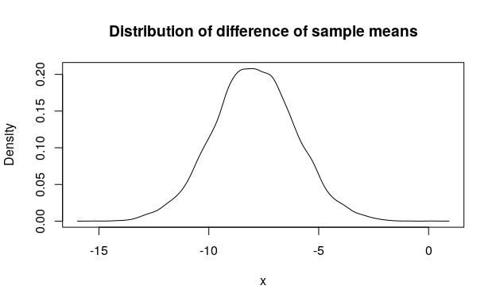
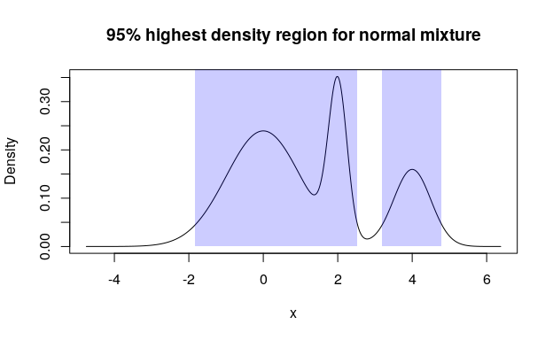

Create, transform, and summarize custom random variables with distribution functions (analogues of p*(), d*(), q*(), and r*() functions from base R), all of which called “pdqr-functions”. General idea is to work with manually created distributions which can be described in four interchangeable functional ways.
Typical usage is to:
- Create pdqr-function from sample or data frame (with
new_*()family), and/or convert from some other existing distribution function (withas_*()family). - Make necessary transformations with
form_*()family. - Compute summary values with
summ_*()family.
Two types of pdqr-functions, representing different types of distributions, are supported:
- Type “discrete”: random variable has finite number of output values. Pdqr-function is explicitly defined by the collection of its values with their corresponding probability. Usually is used when underlying distribution is discrete (even if in theory there are infinite number of output values).
- Type “continuous”: random variable has infinite number of output values in the form of continuous random variable. It is explicitly defined by piecewise-linear density function with finite support and values. Usually is used when underlying distribution is continuous (even if in theory it has infinite support and/or density values).
Implemented approaches often emphasize approximate and numerical solutions:
- All distributions assume finite support (output values are bounded from below and above) and finite values of density function (density function in case of “continuous” type can’t go to infinity).
- Some methods implemented with simulation techniques.
Note that to fully use this package, one needs to be familiar with basics of probability theory (concepts such as probability, distribution, density, etc.).
This README covers the following topics:
- How to install in Installation.
- How to quickly start using ‘pdqr’ by looking at Quick examples.
- How to create pdqr-function from sample or data frame in Create with
new_*(). - How to convert existing distribution functions to pdqr-functions in Convert with
as_*(). - How to transform distribution in Transform with
form_*(). - How to summarize distribution in Summarize with
summ_*().
Installation
‘pdqr’ is not yet on CRAN. You can install the development version from GitHub with:
Quick examples
Generate a sample from a distribution defined by some reference sample:
# Treat input sample as coming from a continuous distribution
r_mpg <- new_r(mtcars$mpg, type = "continuous")
r_mpg(n = 10)
#> [1] 17.3792362 10.4822955 22.8221407 21.8118788 15.5166760 16.3005293
#> [7] 20.5809388 16.8043292 21.1901692 19.9680967Compute winsorized mean:
# Import 'magrittr' to use pipe operator `%>%`
library(magrittr)
# Take a sample
mtcars$mpg %>%
# Create pdqr-function of any class treating input as discrete
new_d(type = "discrete") %>%
# Winsorize tails
form_tails(level = 0.1, method = "winsor", direction = "both") %>%
# Compute mean of distribution
summ_mean()
#> [1] 20.19375Compute and visualize distribution of difference of sample means:
# Compute distribution of first sample mean treating input as continuous
mpg_vs0 <- mtcars$mpg[mtcars$vs == 0]
d_vs0 <- new_d(mpg_vs0, "continuous")
(d_vs0_mean <- form_estimate(
d_vs0, estimate = mean, sample_size = length(mpg_vs0)
))
#> Density function of continuous type
#> Support: ~[12.14822, 20.63362] (511 intervals)
# Compute distribution of second sample mean treating input as continuous
mpg_vs1 <- mtcars$mpg[mtcars$vs == 1]
d_vs1 <- new_d(mpg_vs1, "continuous")
(d_vs1_mean <- form_estimate(
d_vs1, estimate = mean, sample_size = length(mpg_vs1)
))
#> Density function of continuous type
#> Support: ~[18.42035, 31.00767] (511 intervals)
# Compute distribution of difference of sample means using random simulation
(mpg_diffmean <- d_vs0_mean - d_vs1_mean)
#> Density function of continuous type
#> Support: ~[-15.97734, 0.93274] (511 intervals)
# Visualize with base `plot()`
plot(mpg_diffmean, main = "Distribution of difference of sample means")
Compute and visualize 95% highest density region for mixture of normal distributions:
# Create a list of pdqr-functions
norm_list <- list(
as_d(dnorm), as_d(dnorm, mean = 2, sd = 0.25), as_d(dnorm, mean = 4, sd = 0.5)
)
# Form a mixture with custom weights
norm_mix <- form_mix(norm_list, weights = c(0.6, 0.2, 0.2))
# Compute 95% highest density region
(norm_hdr <- summ_hdr(norm_mix, level = 0.95))
#> left right
#> 1 -1.82436425 2.53094176
#> 2 3.19653241 4.79331185
# Visualize
plot(norm_mix, main = "95% highest density region for normal mixture")
region_draw(norm_hdr)
Create with new_*()
All new_*() functions create a pdqr-function of certain class (“p”, “d”, “q”, or “r”) and type (“discrete” or “continuous”) based on sample or data frame (with appropriate structure):
-
Sample input is converted into data frame of appropriate structure that defines distribution (see next list item). It is done based on type. For “discrete” type it gets tabulated with frequency of unique values serving as their probability. For “continuous” type distribution density is estimated using
density()function if input has at least 2 elements. For 1 element special “dirac-like” pdqr-function is created: an approximation of single number as triangular distribution with very narrow support (1e-8 order of magnitude). - Data frame input should completely define distribution. For “discrete” type it should have “x” and “prob” columns for output values and their probabilities. For “continuous” type - “x” and “y” columns for points, which define piecewise-linear continuous density function. Columns “prob” and “y” will be automatically normalized to represent proper distribution: sum of “prob” will be 1 and total square under graph of piecewise-linear function will be 1.
All information about distribution that pdqr-function represents is stored in its “x_tbl” metadata: a data frame describing distribution with format similar to data frame input of new_*() functions. One can get it using meta_x_tbl() function.
Pdqr class correspond to the following functions describing distribution:
-
P-function is a cumulative distribution function. Created with
new_p(). -
D-function is a probability mass function for “discrete” type and density function for “continuous”. Created with
new_d(). Generally speaking, it is a derivative of distribution’s p-function. -
Q-function is a quantile function. Created with
new_q(). Inverse of distribution’s p-function. -
R-function is a random generation function. Created with
new_r(). Generates a random sample from distribution.
For more details see vignette about creating pdqr-functions.
Create pdqr-function from sample
# Treat input as discrete
(p_mpg_dis <- new_p(mtcars$mpg, type = "discrete"))
#> Cumulative distribution function of discrete type
#> Support: [10.4, 33.9] (25 elements)
(d_mpg_dis <- new_d(mtcars$mpg, type = "discrete"))
#> Probability mass function of discrete type
#> Support: [10.4, 33.9] (25 elements)
(q_mpg_dis <- new_q(mtcars$mpg, type = "discrete"))
#> Quantile function of discrete type
#> Support: [10.4, 33.9] (25 elements)
(r_mpg_dis <- new_r(mtcars$mpg, type = "discrete"))
#> Random generation function of discrete type
#> Support: [10.4, 33.9] (25 elements)
# "x_tbl" metadata is the same for all `*_mpg_dis()` pdqr-functions
head(meta_x_tbl(p_mpg_dis), n = 3)
#> x prob cumprob
#> 1 10.4 0.06250 0.06250
#> 2 13.3 0.03125 0.09375
#> 3 14.3 0.03125 0.12500
# Treat input as continuous
(p_mpg_con <- new_p(mtcars$mpg, type = "continuous"))
#> Cumulative distribution function of continuous type
#> Support: ~[2.96996, 41.33004] (511 intervals)
(d_mpg_con <- new_d(mtcars$mpg, type = "continuous"))
#> Density function of continuous type
#> Support: ~[2.96996, 41.33004] (511 intervals)
(q_mpg_con <- new_q(mtcars$mpg, type = "continuous"))
#> Quantile function of continuous type
#> Support: ~[2.96996, 41.33004] (511 intervals)
(r_mpg_con <- new_r(mtcars$mpg, type = "continuous"))
#> Random generation function of continuous type
#> Support: ~[2.96996, 41.33004] (511 intervals)
# "x_tbl" metadata is the same for all `*_mpg_con()` pdqr-functions
head(meta_x_tbl(p_mpg_con), n = 3)
#> x y cumprob
#> 1 2.96996269 0.000114133557 0.00000000e+00
#> 2 3.04503133 0.000125168087 8.98202438e-06
#> 3 3.12009996 0.000136934574 1.88198694e-05
# Output of `new_*()` is actually a function
p_mpg_dis(15:20)
#> [1] 0.18750 0.31250 0.34375 0.40625 0.46875 0.56250
# Random generation. "discrete" type generates only values from input
r_mpg_dis(10)
#> [1] 10.4 33.9 26.0 19.2 24.4 18.7 17.8 18.7 15.5 21.4
r_mpg_con(10)
#> [1] 35.7089680 33.3634914 31.1541225 15.6482281 20.8554689 13.7275908
#> [7] 11.3686051 16.7155604 20.6710197 20.5132727
# Special case of dirac-like pdqr-function, which numerically approximates
# single number with distribution with narrow support
(r_dirac <- new_r(3.14, "continuous"))
#> Random generation function of continuous type
#> Support: ~[3.14, 3.14] (2 intervals)
meta_x_tbl(r_dirac)
#> x y cumprob
#> 1 3.13999999 0 0.0
#> 2 3.14000000 100000001 0.5
#> 3 3.14000001 0 1.0Create pdqr-function from data frame
# Type "discrete"
dis_tbl <- data.frame(x = 1:4, prob = 4:1 / 10)
new_d(dis_tbl, type = "discrete")
#> Probability mass function of discrete type
#> Support: [1, 4] (4 elements)
new_r(dis_tbl, type = "discrete")(10)
#> [1] 4 1 3 1 2 4 3 2 4 1
# Type "continuous"
con_tbl <- data.frame(x = 1:4, y = c(0, 1, 1, 1))
new_d(con_tbl, type = "continuous")
#> Density function of continuous type
#> Support: [1, 4] (3 intervals)
new_r(con_tbl, type = "continuous")(10)
#> [1] 2.21323986 1.58190910 2.85635049 2.32440194 2.44538842 2.89743821
#> [7] 3.29852362 2.43084969 2.81580878 2.79585280
Convert with as_*()
Family of as_*() functions should be used to convert existing distribution functions into desired class (“p”, “d”, “q”, or “r”). Roughly, this is a new_*() family but with function as an input.
There are two main use cases:
- Convert existing pdqr-functions to different type.
- Convert (create) pdqr-function based on some other user-supplied distribution function.
For more details see vignette about converting pdqr-functions.
Existing pdqr-functions
Converting existing pdqr-function to desired type is done straightforwardly by changing function’s class without touching the underlying distribution (“x_tbl” metadata is the same):
d_dis <- new_d(1:4, "discrete")
meta_x_tbl(d_dis)
#> x prob cumprob
#> 1 1 0.25 0.25
#> 2 2 0.25 0.50
#> 3 3 0.25 0.75
#> 4 4 0.25 1.00
# This is equivalent to `new_p(1:4, "discrete")`
(p_dis <- as_p(d_dis))
#> Cumulative distribution function of discrete type
#> Support: [1, 4] (4 elements)
meta_x_tbl(p_dis)
#> x prob cumprob
#> 1 1 0.25 0.25
#> 2 2 0.25 0.50
#> 3 3 0.25 0.75
#> 4 4 0.25 1.00Other distribution functions
Another important use case for as_*() functions is to convert some other distribution functions to be pdqr-functions. Except small number of special cases, output of as_*() function will have “continuous” type. The reason is because identifying exact values of distribution in discrete case is very hard in this setup (when almost nothing is known about the input function). It is assumed that if user knows those values, some new_*() function with data frame input can be used to create arbitrary discrete pdqr-function.
General conversion algorithm is as follows:
- If user didn’t supply support, detect it using algorithms targeted for every pdqr class separately. If input function belongs to a certain set of “honored” distributions (currently, it is all common univariate distributions from ‘stats’ package), support is detected in predefined way.
- Using detected support, data frame input for corresponding
new_*()function is created which approximates input function. Approximation precision can be tweaked withn_grid(andn_sampleforas_r()) argument.
Note that output is usually an approximation of input due to the following facts:
- Output density has piecewise-linear nature, which is almost never the case for input function.
- Possible infinite tails are removed to obtain finite support. Usually output support “loses” only around 1e-6 probability on each infinite tail.
- Possible infinite values of density are linearly approximated from neighborhood points.
# "Honored" distributions
as_d(dnorm)
#> Density function of continuous type
#> Support: ~[-4.75342, 4.75342] (10000 intervals)
# Different picewise-linear approximation precision
as_d(dnorm, n_grid = 101)
#> Density function of continuous type
#> Support: ~[-4.75342, 4.75342] (100 intervals)
# Different extra arguments for input
as_d(dnorm, mean = 10, sd = 0.1)
#> Density function of continuous type
#> Support: ~[9.52466, 10.47534] (10000 intervals)
# Custom functions
my_d <- function(x) {ifelse(x >= -1 & x <= 1, 0.75 * (1 - x^2), 0)}
# With algorithmic support detection
as_d(my_d)
#> Density function of continuous type
#> Support: ~[-1.00002, 1.00002] (7338 intervals)
# Providing custom, maybe only partially known, support
as_d(my_d, support = c(-1, NA))
#> Density function of continuous type
#> Support: ~[-1, 1.00001] (9278 intervals)
as_d(my_d, support = c(-1, 1))
#> Density function of continuous type
#> Support: [-1, 1] (10000 intervals)
Transform with form_*() and base operations
Concept of form functions is to take one or more pdqr-function(s) and return a transformed pdqr-function. Argument method is used to choose function-specific algorithm of computation.
For more details see vignette about transforming pdqr-functions.
form_*() family
There are several form_*() functions. Here are some examples:
# Transform support of pdqr-function with `form_resupport()`. Usually useful
# for dealing with bounded values.
d_smpl <- new_d(runif(1000), type = "continuous")
d_smpl_bounded <- form_resupport(d_smpl, support = c(0, 1), method = "reflect")
plot(d_smpl, main = "Estimating density of bounded quantity", col = "black")
lines(d_smpl_bounded, col = "blue")
# Refernece uniform distribution
lines(as_d(dunif), col = "red")
# Perform general transformation with `form_trans()`. This is usually done by
# randomly simulating sample from output distribution and then calling one of
# `new_*()` functions.
d_norm <- as_d(dnorm)
# More accurate result would give use of `+` directly with: d_norm + d_norm
d_norm_2 <- form_trans(list(d_norm, d_norm), trans = `+`)
plot(d_norm_2, col = "black")
lines(as_d(dnorm, sd = sqrt(2)), col = "red")
Base operations
Almost all basic R operations (implemented with S3 group generic functions) has methods for pdqr-functions. Operations are done as if applied to independent random variables with distributions represented by input pdqr-function(s). Many of methods have random nature and are implemented with form_trans(), but have little tweaks that make their direct usage better than form_trans().
d_norm <- as_d(dnorm)
d_unif <- as_d(dunif)
# Distribution of difference of random variables. Computed with random
# simulation.
d_norm - d_unif
#> Density function of continuous type
#> Support: ~[-5.02445, 3.65236] (511 intervals)
# Comparing random variables results into boolean random variable represented
# by boolean pdqr-function (type "discrete" with values 0 for FALSE and 1 for
# TRUE). Here it means that random value of `d_norm` will be greater than random
# value of `d_unif` with probability around 0.316. This is computed directly,
# without random simulation.
d_norm > d_unif
#> Probability mass function of discrete type
#> Support: [0, 1] (2 elements, probability of 1: ~0.31563)
# Distribution of maximum of three random variables. Computed with random
# simulation.
max(d_norm, d_norm, d_norm)
#> Density function of continuous type
#> Support: ~[-2.3575, 4.11583] (511 intervals)
Summarize with summ_*()
Concept of summary functions is to take one or more pdqr-function(s) and return a summary value. Argument method is used to choose function-specific algorithm of computation.
For more details see vignette about summarizing pdqr-functions.
Basic summary
my_d <- as_d(dbeta, shape1 = 1, shape2 = 3)
# There are wrappers for all center summaries
summ_center(my_d, method = "mean")
#> [1] 0.249999259
summ_center(my_d, method = "median")
#> [1] 0.20629921
summ_center(my_d, method = "mode")
#> [1] 0
# There are wrappers for spread summaries
summ_spread(my_d, method = "sd")
#> [1] 0.193647842
# These return essentially the same result
summ_moment(my_d, order = 2, central = TRUE)
#> [1] 0.0374994867
summ_spread(my_d, method = "var")
#> [1] 0.0374994867Regions
Distributions can be summarized with regions: union of closed intervals. They are represented as data frame with rows representing intervals and two columns “left” and “right” with left and right interval edges respectively.
# 90% highest density region (HDR)
summ_hdr(my_d, level = 0.9)
#> left right
#> 1 0 0.535887
# In case of unimodal distribution HDR is essentially the same as 90% interval
# of minimum width
summ_interval(my_d, level = 0.9, method = "minwidth")
#> left right
#> 1 0 0.535839727
summ_interval(my_d, level = 0.9, method = "percentile")
#> left right
#> 1 0.0169524103 0.631594521Distance
Function summ_distance() takes two pdqr-functions and returns a distance between two distributions they represent. Many methods of computation are available. This might be useful for doing comparative statistical inference.
my_d_2 <- as_d(dnorm, mean = 0.5)
# Kolmogorov-Smirnov distance
summ_distance(my_d, my_d_2, method = "KS")
#> [1] 0.397684098
# Total variation distance
summ_distance(my_d, my_d_2, method = "totvar")
#> [1] 0.706221267
# Probability of one distribution be bigger than the other, normalized to [0;1]
summ_distance(my_d, my_d_2, method = "compare")
#> [1] 0.194615851
# Wassertein distance: "average path density point should go while transforming
# from one into another"
summ_distance(my_d, my_d_2, method = "wass")
#> [1] 0.685534883
# Cramer distance: integral of squared difference of p-functions
summ_distance(my_d, my_d_2, method = "cramer")
#> [1] 0.165921075
# "Align" distance: path length for which one of distribution should be "moved"
# towards the other so that they become "aligned" (probability of one being
# greater than the other is 0.5)
summ_distance(my_d, my_d_2, method = "align")
#> [1] 0.251020429
# "Entropy" distance: `KL(f, g) + KL(g, f)`, where `KL()` is Kullback-Leibler
# divergence. Usually should be used for distributions with same support, but
# works even if they are different (with big numerical penalty).
summ_distance(my_d, my_d_2, method = "entropy")
#> [1] 12.6930974Separation, classification, and ROC curve
Function summ_separation() computes a threshold that optimally separates distributions represented by pair of input pdqr-functions. In other words, summ_separation() solves a binary classification problem with one-dimensional linear classifier: values not more than some threshold are classified as one class, and more than threshold - as another. Order of input functions doesn’t matter.
summ_separation(my_d, my_d_2, method = "KS")
#> [1] 0.637042714
summ_separation(my_d, my_d_2, method = "F1")
#> [1] -6.02372908e-05Functions summ_classmetric() and summ_classmetric_df() compute metric of classification setup, similar to one used in summ_separation(). Here classifier threshold should be supplied and order of input matters. Classification is assumed to be done as follows: any x value not more than threshold value is classified as “negative”; if strictly greater - “positive”. Classification metrics are computed based on two pdqr-functions: f, which represents the distribution of values which should be classified as “negative” (“true negative”), and g - the same for “positive” (“true positive”).
# Many threshold values can be supplied
thres_vec <- seq(0, 1, by = 0.2)
summ_classmetric(f = my_d, g = my_d_2, threshold = thres_vec, method = "F1")
#> [1] 0.513819342 0.580222932 0.614898704 0.603832562 0.549732861 0.471575705
# In `summ_classmetric_df()` many methods can be supplied
summ_classmetric_df(
f = my_d, g = my_d_2, threshold = thres_vec, method = c("GM", "F1", "MCC")
)
#> threshold GM F1 MCC
#> 1 0.0 0.000000000 0.513819342 -0.427093061
#> 2 0.2 0.549127659 0.580222932 0.106817345
#> 3 0.4 0.650557843 0.614898704 0.333936376
#> 4 0.6 0.656293762 0.603832562 0.450433146
#> 5 0.8 0.615655766 0.549732861 0.472055694
#> 6 1.0 0.555461222 0.471575705 0.427093061With summ_roc() and summ_rocauc() one can compute data frame of ROC curve points and ROC AUC value respectively. There is also a roc_plot() function for predefined plotting of ROC curve.
my_roc <- summ_roc(my_d, my_d_2)
head(my_roc)
#> threshold fpr tpr
#> 1 5.25342531 0 0.00000000e+00
#> 2 5.24391846 0 4.81164585e-08
#> 3 5.23441161 0 9.84577933e-08
#> 4 5.22490476 0 1.51116706e-07
#> 5 5.21539791 0 2.06194913e-07
#> 6 5.20589106 0 2.63798357e-07
summ_rocauc(my_d, my_d_2)
#> [1] 0.597307926
roc_plot(my_roc)